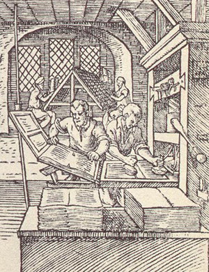
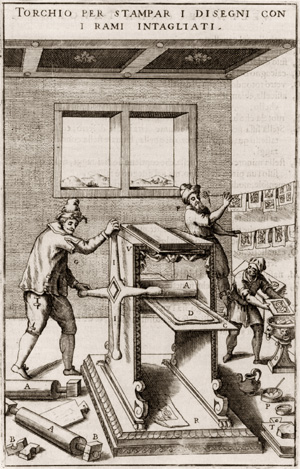

Technical terms explained

A woodcut is a print from a wood block, in which the lines of the design have been
left standing in relief. In the sixteenth century, the most common material for
making wood blocks was pear wood. The design is drawn on the block and a
craftsman cuts away the wood along each side of the drawn lines, leaving
them standing free. Once inked, the blocks print
from those raised lines. Movable type works in the same way; it is therefore
easy to mount wood blocks alongside type in a forme and to print them
together in a screw press.
Copperplate prints in the sixteenth century were of two kinds: engravings and etchings.
Those that we are dealing with here are engravings. To make them, a design is transferred
to the surface of the plate and an engraver gouges out the metal along the lines indicated,
using a burin.

In preparation for printing, the plate is inked in such a way that the ink
penetrates into the gouged lines; then the plate is cleaned to remove all
the surface ink, leaving it only in the lines.
The actual printing involves using a roller press that can exert very considerable pressure.
The paper, which is dampened, is laid on the prepared plate and passed through the rollers.
They force it into the recessed lines so as to pick up the ink.
Because movable type is printed using a screw press, while copperplates
require a roller press, to print the two together on a single sheet involves
putting that sheet through two separate printings.
© 2004 Edinburgh University Library / Royal College of Physicians of Edinburgh
www.lib.ed.ac.uk
26 August 2004
|